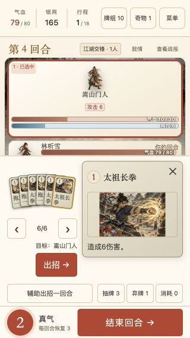
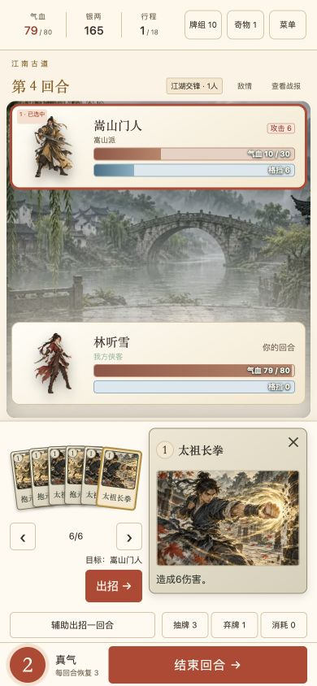
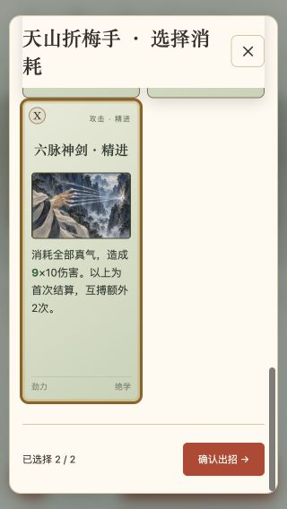
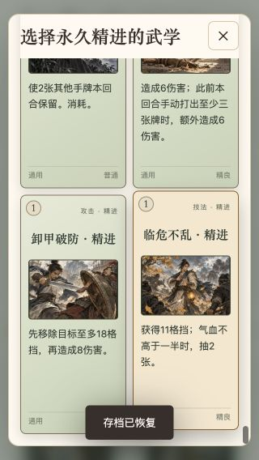
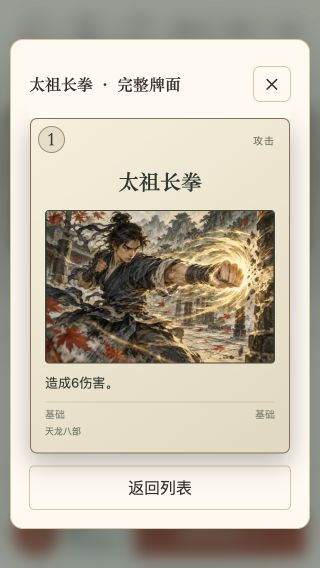
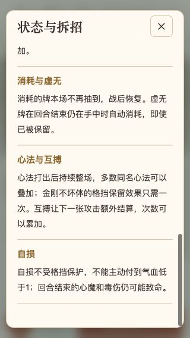
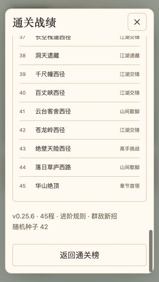
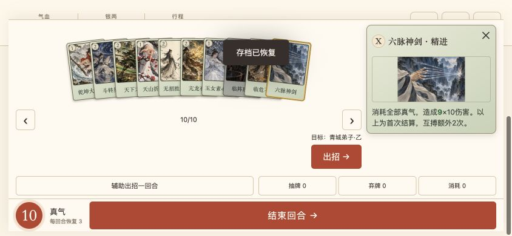

手机端交互复核 · v0.25.6
2026-10-20 · 本轮未发现新的遮挡、裁切或卡图缺失问题。游戏运行文件保持不变，提交本轮验收记录。
覆盖与结果
- 应用内浏览器检查 320×480、320×568、360×640、390×844、568×320、844×390 六种视口，共保存 82 个本地界面状态。
- 82 种战斗牌逐张检查放大牌面：卡图均成功加载，效果说明完整。固定战斗区域与底部操作区没有重叠；最窄长说明场景仍有 164px 战场滚动区域。
- 保持手牌扇面。覆盖上一张、下一张、拖动选牌、切换敌人、关闭再打开、单张及空手牌；线上拖动选牌时，手牌的局部位置、旋转和层级保持稳定。
- 天山折梅手实际选择两张牌并确认出招；检查列表首尾、选择数量和动态效果。结果为七张手牌，所选两张进入消耗区，回到战场后可继续操作。
- 检查手牌说明、牌组、抽牌/弃牌/消耗区、图鉴搜索及精进切换、完整牌面及返回、永久精进与移除、随身奇物、配色、敌情、状态规则、遭遇记录、战报、帮助、地图、新局确认与通关榜。
- 压力场景包括 80 张待精进牌、三堆各 10 张牌、30 件奇物、160 条战报、24 条通关战绩分页和 45 程战绩路线。检查滚动末尾和嵌套返回。
- 走通角色选择→开局机缘→选牌→地图→首场战斗→换回合；另外检查商店、休息、奖励、事件、遗藏和失败页面。
- 741 项自动测试全部通过；Pages 与离线包构建成功，168 个运行文件及发布清单与已发布版本逐字节一致。
- 线上 v0.25.6 再查 320px 选牌、拖动扇面、敌情规则与完整牌面，以及 390px 手牌列表；无控制台错误。线上原存档导出前后字节一致。本地原进度已恢复，计时增加 203ms，其余数据一致。
上述为浏览器手机视口模拟验收，不代表实体手机验收。专用存档用于覆盖界面与压力情况，不属于完整 45 程平衡模拟。通关榜测试在独立端口完成，测试战绩未混入原存档。
结构化结论 · 82 种战斗牌检查数据
关键画面

320px：放大牌面、完整说明与手牌扇面并存。

390px：检查选牌后的战场和回合操作。

选牌列表末尾：最后一张牌与确认栏完整显示。

80 张永久精进牌：滚动后仍可读完整效果。

线上完整牌面与返回列表按钮。

线上长规则弹窗：末尾文字与关闭按钮。

战绩路线：45 程展开后仍能返回榜单。

手机横屏：页面可滚动，牌面与操作不裁切。